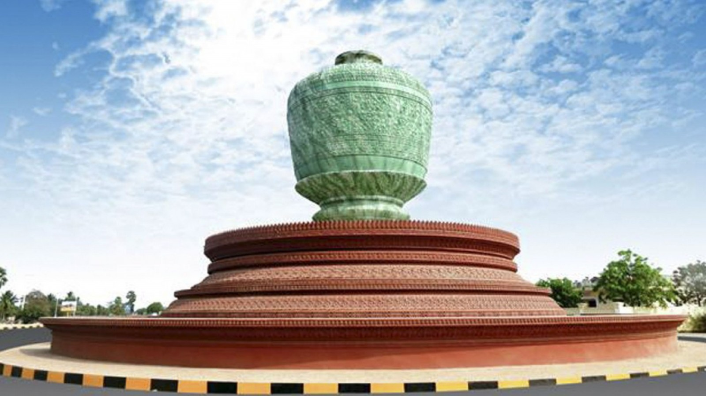

Located on the western side of the Tonle Sap lake, Pursat province is covered mainly by moutainous terrain. Although the province is not home to many ancient temples, the highlight of this province concerns the history of the war between Siamese and the Khmers that took place just before the French Colonial era in Cambodia. An popular historical site is that of the Tomb of Oknha Klang Meung, the Cambodian hero who led the war against Siamese and defeated them in 1482.
While in Pursat, visit the floating town of Kampong Luang, and take in the natural beauty of the Ouda. These are unspoiled attractions that this charming province boasts. This is also a town known for its top-quality marble. Besides farming, most of the residents make their living sculpting using marble as the main medium. Kampong Luang, a town floating on the Tonle Sap Lake is just 40 km away from the Pursat town center. The floating village includes a police station, schools, restaurants, a clinic, shops and bars. The town is self-sufficient and is equipped with all the facilities of a grounded city. The Ouda, a remote attraction, refreshes even the most tired travelers with its gorgeous scenery and tranquility. Any stress brought on by the challenges of work or family life will be carried away in the natural splendor of the river, which flows from the Arai River in the Cardamom Mountains. The mouth of the river, approximately 500 meters wide, is framed by thousands of large and small rocks. During the rainy season, the crystal clear water crashes over the smooth stones, but when the rains dry up, sentimental travelers can take a seat on the rocks to reflect on their journey. Opened just a few years ago, Ouda is located in Rokat Commune in Kravanh district 58 km from Pursat town. Pursat and its surrounding attractions are sure to season even the savviest traveler. Lunch along the highway, dip into history with Oknha Kleang Mueng, a floating village tour, and a bathe in the healing waters of Ouda for an unforgettable trip.